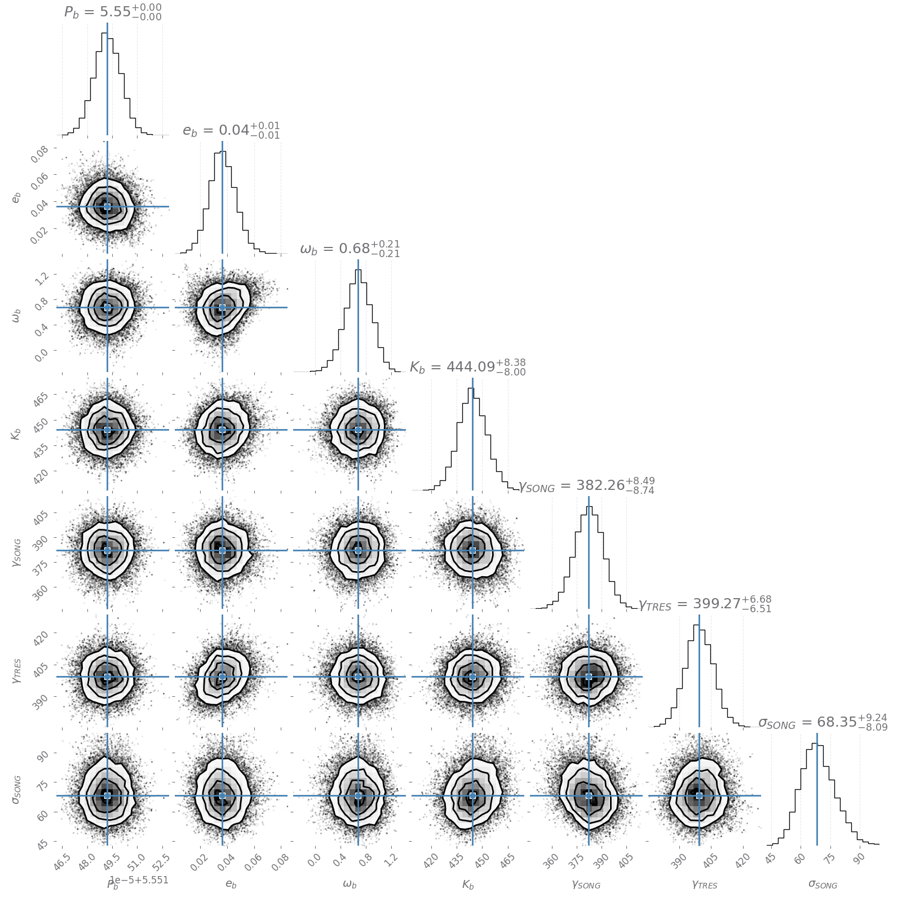

Tutorials¶
RV Fitting¶
Example 1¶
Here we perform Bayesian inference on a radial-velocity dataset. This example fits RVs of KELT-24, known to host a transiting 5.5 day massive hot Jupiter on a moderately eccentric orbit.
# Base Python libraries
import os
# Import numpy
import numpy as np
# Import optimize sub modules
import optimize.knowledge as optknow
import optimize.optimizers as optimizers
import optimize.kernels as optkernels
import optimize.samplers as optsamplers
# Import pychell sub modules
import pychell.orbits.rvprob as pcrvprob
import pychell.orbits.rvdata as pcrvdata
import pychell.orbits.rvlikes as pcrvlikes
import pychell.orbits.rvmodels as pcrvmodels
# Path to input rv file and outputs
path = os.path.dirname(os.path.abspath(__file__)) + os.sep
fname = 'kelt24_rvs.txt'
# The name of the star for plots
star_name = 'KELT-24'
# Mass and uncertainty of star for mass determination
mstar = 1.460
mstar_unc = [0.059, 0.055]
# Starting jitter values for each instrument.
jitter_dict = {'SONG': 50, 'TRES': 0}
# All data in one dictionary
data = pcrvdata.MixedRVData.from_radvel_file(fname)
# Init parameters and planets dictionary
pars = optknow.Parameters()
planets_dict = {}
# Define parameters for planet 1
# Other bases are available.
planets_dict[1] = {"label": "b", "basis": pcrvmodels.TCOrbitBasis(1)}
# Values from Rodriguez et al. 2019 for KELT-24 b
per1 = 5.5514926
per1_unc = 0.0000081
tc1 = 2457147.0529
tc1_unc = 0.002
ecc1 = 0.077
ecc1_unc = 0.024
w1 = 55 * np.pi / 180
w1_unc = 15 * np.pi / 180
# Period
pars["per1"] = optknow.Parameter(value=per1, vary=True)
pars["per1"].add_prior(optknow.Gaussian(per1, per1_unc))
# Time of conjunction
pars["tc1"] = optknow.Parameter(value=tc1, vary=False)
pars["tc1"].add_prior(optknow.Gaussian(tc1, tc1_unc))
# Eccentricity
pars["ecc1"] = optknow.Parameter(value=ecc1, vary=True)
pars["ecc1"].add_prior(optknow.Uniform(1E-10, 1))
pars["ecc1"].add_prior(optknow.Gaussian(ecc1, ecc1_unc))
# Angle of periastron
pars["w1"] = optknow.Parameter(value=w1, vary=True)
pars["w1"].add_prior(optknow.Gaussian(w1, w1_unc))
# RV semi-amplitude
pars["k1"] = optknow.Parameter(value=462, vary=True)
pars["k1"].add_prior(optknow.Positive())
# Per instrument gamma offsets
# Additional small offset is to avoid cases where the median is already subtracted off.
for instname in data:
pname = "gamma_" + instname
pars[pname] = optknow.Parameter(value=np.nanmedian(data[instname].rv) + np.pi / 100, vary=True)
pars[pname].add_prior(optknow.Uniform(pars[pname].value - 200, pars[pname].value + 200))
# Linear and quadratic trends
pars["gamma_dot"] = optknow.Parameter(value=0, vary=False)
pars["gamma_ddot"] = optknow.Parameter(value=0, vary=False)
# Per-instrument jitter
for instname in data:
pname = "jitter_" + instname
pars[pname] = optknow.Parameter(value=jitter_dict[instname], vary=jitter_dict[instname] > 0)
if pars[pname].vary:
pars[pname].add_prior(optknow.Uniform(1E-10, 100))
# Initiate a composite likelihood object
likes = pcrvlikes.MixedRVLikelihood()
# Define a single kernel and model, add to likelihoods
kernel = optkernels.WhiteNoise(data=data)
model = pcrvmodels.RVModel(planets_dict=planets_dict, data=data, p0=pars, kernel=kernel)
likes["rvs"] = pcrvlikes.RVLikelihood(data=data, model=model)
# Define max like optimizer (iterative Nelder-Mead) and emcee MCMC sampler
optimizer = optimizers.NelderMead(scorer=likes)
sampler = optsamplers.AffInv(scorer=likes, options=None)
# Define top-level exoplanet "problem" (Really an RV problem for now)
optprob = pcrvprob.ExoProblem(output_path=path, star_name=star_name, p0=pars, optimizer=optimizer, sampler=sampler, data=data, likes=likes, mstar=mstar, mstar_unc=mstar_unc)
# Perform max like fit
# Results are saved to a pickle file.
maxlike_result = optprob.maxlikefit()
# Plots
# All plots are automatically saved with a unique timestamp in the filename.
optprob.plot_phased_rvs_all(maxlike_result["pbest"])
optprob.plot_full_rvs(maxlike_result["pbest"])
# Set parameters from max like fit
optprob.set_pars(maxlike_result["pbest"])
# Perform model comparison
# Results are saved to a pickle file
mc_result = optprob.model_comparison()
# Perform mcmc. Here we expose several kwargs, which is not always necessary.
# Results are saved to a pickle file
mcmc_result = optprob.mcmc(n_burn_steps=500, check_every=200, n_steps=75_000, rel_tau_thresh=0.01, n_min_steps=1000, n_cores=8, n_taus_thresh=50)
# Corner plot
optprob.corner_plot(mcmc_result)
The resulting best fit parameters from the max likelihood and mcmc sampling are saved to .pkl files. The best fit parameters from the max likelihood fitting are printed to the terminal:
(Parameter) Name: per1 | Value: 5.551493310923132
Priors:
Gaussian: [5.5514926, 8.1e-06]
(Parameter) Name: tc1 | Value: 2457147.0529 (Locked)
Priors:
Gaussian: [2457147.0529, 0.002]
(Parameter) Name: ecc1 | Value: 0.03424765637223241
Priors:
Uniform: [1e-10, 1]
Gaussian: [0.077, 0.024]
(Parameter) Name: w1 | Value: 0.7471046233814415
Priors:
Gaussian: [0.9599310885968813, 0.2617993877991494]
(Parameter) Name: k1 | Value: 441.5047007138727
Priors:
Positive
(Parameter) Name: gamma_SONG | Value: 382.3918526498997
Priors:
Gaussian: [330.0031415926536, 20]
(Parameter) Name: gamma_TRES | Value: 400.17917891086967
Priors:
Gaussian: [303.8031415926536, 20]
(Parameter) Name: gamma_dot | Value: 0.0 (Locked)
(Parameter) Name: gamma_ddot | Value: 0.0 (Locked)
(Parameter) Name: jitter_SONG | Value: 69.62453494177453
Priors:
Uniform: [1e-10, 100]
(Parameter) Name: jitter_TRES | Value: 0.0 (Locked)
The full RV model, data, and residuals.

The phased RVs for each planet.

The corner plot from mcmc sampling.
Example 2¶
Here we perform the same Bayesian inference on KELT-24but use the webpage GUI.
First we modify our Python script. The majority of the code is identicical. Note we also import pychell.stutils.
# Base Python libraries
import os
# Import numpy
import numpy as np
# Import optimize sub modules
import optimize.knowledge as optknow
import optimize.optimizers as optimizers
import optimize.kernels as optkernels
import optimize.samplers as optsamplers
# Import pychell sub modules
import pychell.orbits.rvprob as pcrvprob
import pychell.orbits.rvdata as pcrvdata
import pychell.orbits.rvlikes as pcrvlikes
import pychell.orbits.rvmodels as pcrvmodels
import pychell.stutils as pcstutils
# Path to input rv file and outputs
path = os.path.dirname(os.path.abspath(__file__)) + os.sep
fname = 'kelt24_rvs.txt'
# The name of the star for plots
star_name = 'KELT-24'
# Mass and uncertainty of star for mass determination
mstar = 1.460
mstar_unc = [0.059, 0.055]
# Starting jitter values for each instrument.
jitter_dict = {'SONG': 50, 'TRES': 0}
# All data in one dictionary
data = pcrvdata.MixedRVData.from_radvel_file(fname)
# Streamlit components
comps = {}
# Make web page title
pcstutils.make_title(title=star_name)
# Make a data selector
pcstutils.DataSelector(comps, data)
# Init parameters and planets dictionary
pars = optknow.Parameters()
planets_dict = {}
# Define parameters for planet 1
# Other bases are available.
planets_dict[1] = {"label": "b", "basis": pcrvmodels.TCOrbitBasis(1)}
# Values from Rodriguez et al. 2019 for KELT-24 b
per1 = 5.5514926
per1_unc = 0.0000081
tc1 = 2457147.0529
tc1_unc = 0.002
ecc1 = 0.077
ecc1_unc = 0.024
w1 = 55 * np.pi / 180
w1_unc = 15 * np.pi / 180
# Period
pars["per1"] = optknow.Parameter(value=per1, vary=True)
pars["per1"].add_prior(optknow.Gaussian(per1, per1_unc))
# Time of conjunction
pars["tc1"] = optknow.Parameter(value=tc1, vary=False)
pars["tc1"].add_prior(optknow.Gaussian(tc1, tc1_unc))
# Eccentricity
pars["ecc1"] = optknow.Parameter(value=ecc1, vary=True)
pars["ecc1"].add_prior(optknow.Uniform(1E-10, 1))
pars["ecc1"].add_prior(optknow.Gaussian(ecc1, ecc1_unc))
# Angle of periastron
pars["w1"] = optknow.Parameter(value=w1, vary=True)
pars["w1"].add_prior(optknow.Gaussian(w1, w1_unc))
# RV semi-amplitude
pars["k1"] = optknow.Parameter(value=462, vary=True)
pars["k1"].add_prior(optknow.Positive())
# Per instrument gamma offsets
# Additional small offset is to avoid cases where the median is already subtracted off.
for instname in data:
pname = "gamma_" + instname
pars[pname] = optknow.Parameter(value=np.nanmedian(data[instname].rv) + np.pi / 100, vary=True)
pars[pname].add_prior(optknow.Uniform(pars[pname].value - 200, pars[pname].value + 200))
# Linear and quadratic trends
pars["gamma_dot"] = optknow.Parameter(value=0, vary=False)
pars["gamma_ddot"] = optknow.Parameter(value=0, vary=False)
# Per-instrument jitter
for instname in data:
pname = "jitter_" + instname
pars[pname] = optknow.Parameter(value=jitter_dict[instname], vary=jitter_dict[instname] > 0)
if pars[pname].vary:
pars[pname].add_prior(optknow.Uniform(1E-10, 100))
# Initiate a composite likelihood object
likes = pcrvlikes.MixedRVLikelihood()
# Define a single kernel and model, add to likelihoods
kernel = optkernels.WhiteNoise(data=data)
model = pcrvmodels.RVModel(planets_dict=planets_dict, data=data, p0=pars, kernel=kernel)
likes["rvs"] = pcrvlikes.RVLikelihood(data=data, model=model)
# Define max like optimizer (iterative Nelder-Mead) and emcee MCMC sampler
optimizer = optimizers.NelderMead(scorer=likes)
sampler = optsamplers.AffInv(scorer=likes, options=None)
# Define top-level exoplanet "problem" (Really an RV problem for now)
optprob = pcrvprob.ExoProblem(output_path=path, star_name=star_name, p0=pars, optimizer=optimizer, sampler=sampler, data=data, likes=likes, mstar=mstar, mstar_unc=mstar_unc)
# Perform max like fit
# Results are saved to a pickle file.
maxlike_result = optprob.maxlikefit()
# Plots
# All plots are automatically saved with a unique timestamp in the filename.
optprob.plot_phased_rvs_all(maxlike_result["pbest"])
optprob.plot_full_rvs(maxlike_result["pbest"])
# Set parameters from max like fit
optprob.set_pars(maxlike_result["pbest"])
# Remaining Components.
# You can also append your own streamlit code before or after this block.
comps = {}
pcstutils.RVActions(comps, optprob, has_gp=False)
if comps["max_like_button"]:
opt_result = optprob.optimize()
pcstutils.MaxLikeResult(comps, optprob, opt_result)
if comps["model_comp_button"]:
mc_result = optprob.model_comparison()
pcstutils.ModelCompResult(comps, optprob, mc_result)
if comps["sample_button"]:
sampler_result = optprob.sample(n_min_steps=3000)
pcstutils.MCMCResult(comps, optprob, sampler_result)
pcstutils.PlanetsResults(comps, optprob, sampler_result)
if comps["per_search_button"]:
if comps["persearch_kind_input"] == "Brute Force":
periods, persearch_result = optprob.rv_period_search(pmin=float(comps["persearch_min_input"]), pmax=float(comps["persearch_max_input"]), planet_index=2, n_periods=750, n_cores=8)
pcstutils.RVPeriodSearchResult(comps, optprob, periods, persearch_result)
else:
gls_result = optprob.gls_periodogram(apply_gp=comps["use_gp_input"], remove_planets=comps["remove_planet_inputs"], pmin=float(comps["persearch_min_input"]), pmax=float(comps["persearch_max_input"]))
pcstutils.GLSResult(comps, optprob, gls_result)
This file is saved as kelt24_example_streamlit.py. We run it as streamlit run kelt24_example_streamlit.py. This will open a webpage that looks like the following:
From here one can perform the desired actions. Here, the starting parameters are always what the user specifies in the script. All results are still saved to files, and interactive plots are shown in the browser.